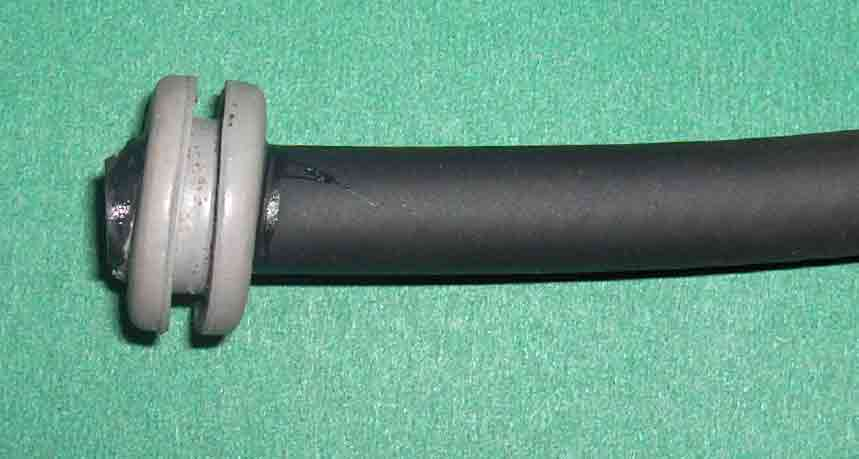
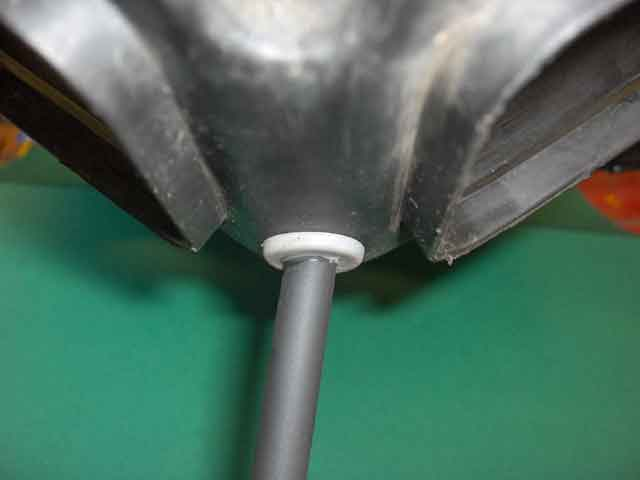
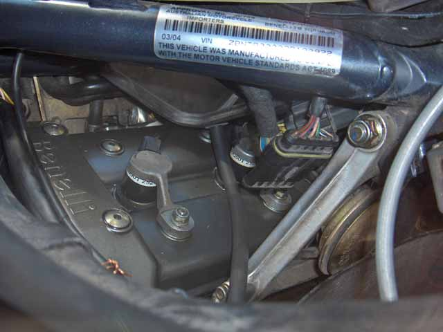

Drain Hole Modification
The original drain empties directly over Plug #2. This has been blamed for several coil stick failures.
The following modification solves this problem:-

Superglue rubber tube at an angle, into a grommet

Fit the assembly in place of the original drain plug

Position the hose to the right front of the engine, taking care not to let it touch the exhaust.